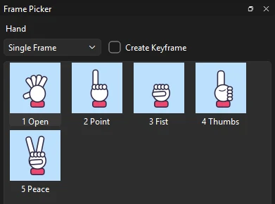
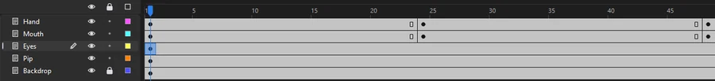

Tutorials
Hands and faces with the Frame Picker
Swap Pip's hand poses and mouth shapes by clicking pictures in the Frame Picker, key them along the timeline, and set the eyes looping so they blink.
This page is also a lesson inside Phoenix: choose and start Hands and faces with the Frame Picker, and Phoenix points at each control as you go. It takes about 7 minutes.
To follow along here instead, download the starting document, frame-picker.fla, and open it with .
Pip's hand, mouth and eyes are graphic symbols, each on a layer of its own. Each symbol holds a set of drawings, one on each of its frames: Hand has five poses, labeled Open, Point, Fist, Thumbs and Peace; Mouth has Smile, Grin, Oh and Frown; Eyes is a blink, 48 frames long.
Each instance is set to Single Frame, so it shows one drawing and holds it. The Frame Picker chooses which.
1. Select the hand
In the timeline, click frame 1 of the Hand layer. That selects the hand on the stage.
2. Open the Frame Picker

Choose . It shows each frame of Hand as a picture, captioned with its frame number and label.
3. Point
Click 2 Point. Pip points up.
4. Key as you pick
Check Create Keyframe at the top of the Frame Picker. Now each picture you click goes on a new keyframe at the playhead, and the frames before keep what they had.
5. Go to frame 24
Click frame 24 of the Hand layer. The hand is still selected: it is the same pose, held from frame 1.
6. Thumbs up
Click 4 Thumbs. Phoenix adds a keyframe on frame 24 with the thumbs up on it.
7. Peace on frame 48
Click frame 48 of the Hand layer, then 5 Peace.
8. The mouth
Click frame 24 of the Mouth layer. The Frame Picker now shows the mouth's shapes. Click 2 Grin.
9. Surprise
Click frame 48 of the Mouth layer, then 3 Oh.

10. Let the eyes blink
Click frame 1 of the Eyes layer. The list beside Create Keyframe shows how the selected instance plays: Single Frame, so the eyes never blink. Choose Loop from it: the eyes play their 48 frames over and over, blinking once each time.
11. Play it
Press Enter, or click the play button in the timeline header. Pip points and smiles, gives a thumbs up with a grin, then a peace sign with an "Oh!", blinking all the while.
What you did
You swapped drawings by picture instead of typing frame numbers, and keyed them as you went. Each pick is one step to undo.
The list also has Play Once, which plays the symbol's frames once and stops on the last, Loop Reverse and Play Once Reverse, which play them backward, and Ping Pong, which plays them forward and back. The Properties panel has the same choices. For your own characters, put a drawing on each frame of a graphic symbol and label the frames, so the Frame Picker captions them.
For everything this tutorial touches on, see The Frame Picker.